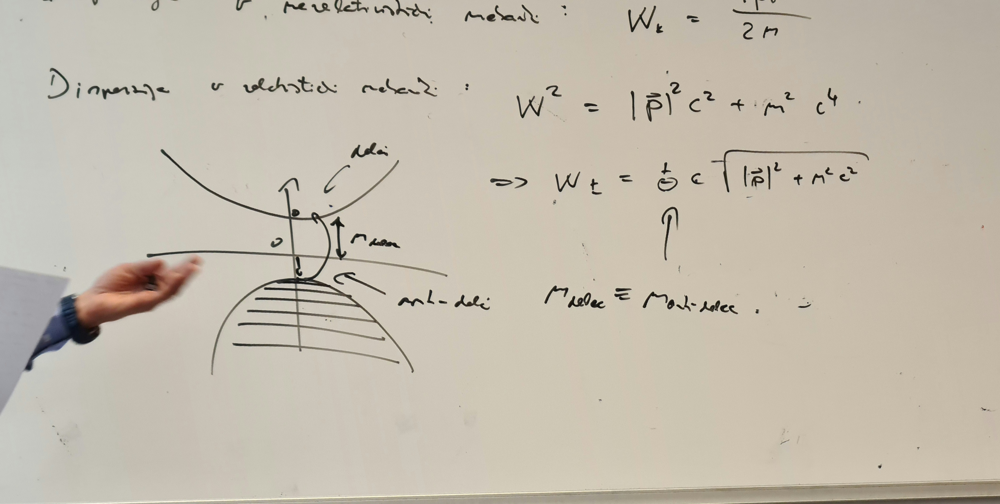
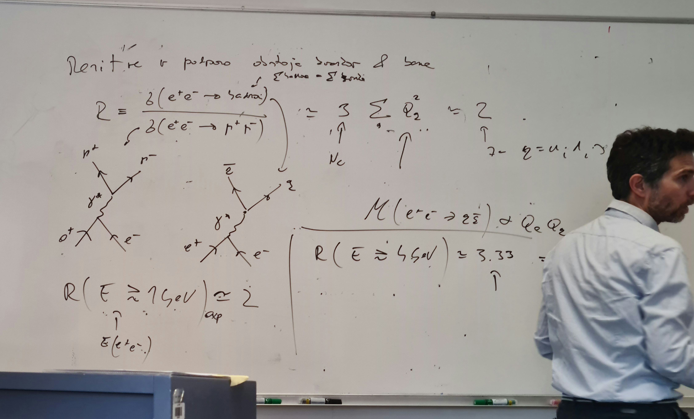
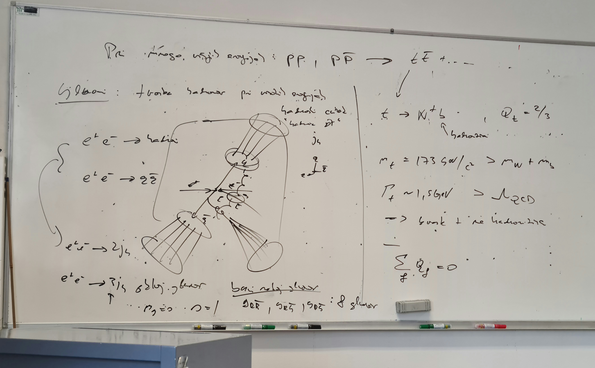

mf2 preostanek predavanj
Table of Contents
1. Delci
1.1. Anti-delci
Disperzija v nerelativističnem mehaniki
\begin{equation} \label{eq:107} T = \frac{\left| \vec{p} \right|^2}{2m} \end{equation}Disperzija v relativistični mehaniki se spremeni in ni več samo kinetična energija, ampak celotna energija
\begin{equation} \label{eq:108} E ^2 = (\left| \vec{p} \right| c )^2 + (mc ^2)^2 \end{equation}Problem je, ker ima ta enačba dve možni rešitvi
\begin{equation} \label{eq:109} E_{\pm} = \pm c \sqrt{ \left| \vec{p} \right|^2 + (mc) ^2} \end{equation}Hevrstično rešitev poda Dirac in je po izgledu trdne snovi. Kakor smo imeli prej razlago vrzeli in elektronov, so sedaj namesto njih delci in anti-delci. Diracovo morje.

Diracovo morje deluje dobro za fermione, ker upošteva Paulijev izključitveni princip.
Razdalja od zgornje krivulje do abscise je vrednosti \( m_{\text{delec}} c ^2 \), od abscise do spodnje krivulje pa je \( m_{\text{antidelec}} c ^2 \). Ker sta masi delca in anti delca enaki, pomeni, da je celotna energija reže enaka \( 2 m c ^2 \).
Če vzmamo razpad fotona na elektron in pozitron, velja ohranitev naboja.
\begin{equation} \label{eq:110} Q_{e^+} = - Q_{e^-} \end{equation}Vsi delci v naravi imajo svoje anti-delce.
Puščica časa ni nikjer definirana (da greš v času naprej ali nazaj). Kvečjemu je definirana časovna kavzalnosti in pa entropijski čas iz reda v nered.
Za bozone Diracov razmislek ne velja (\( W^+ - W^- \) ali (\( \pi ^+ - \pi ^- \))). Tudi \( p - \bar{p} \) in \( n - \bar{n} \). Nekateri (nevtralni) delci so sami sebi anti-delci \( \gamma, Z^0, \pi^0 \), morda \( \nu \)
Rešitev potovanja anti-delca v času naprej je enaka rešitvi delca, ki potuje v času nazaj.
V reakcijah in procesih lahko delce v začetnem stanju zamenjamo z anti-delci v začetnem stanju in obratno.
Tako dobimo nove mogoče procese. Zamenjamo lahko tudi celotno začetno in končno stanje (obrat časa).
- Primer
Razpad \( \beta^- \):
\begin{equation} \label{eq:111} \beta^- \rightarrow p e^- \bar{\nu}_e \iff p e^- \bar{\nu}_e \iff pe^- \rightarrow n \nu_e (\text{zajetje elektrona}) \iff p \rightarrow e^+ n \nu_e (\beta^{+}) \end{equation}Šibko interakcijo rahlo razlikujejo med delci in anti-delci (kršitev CP).
V vesolju
\begin{equation} \label{eq:112} \frac{n_p - n_{\bar{p}}}{n_{\gamma}} \approx 10^{-10} \end{equation}Vesolje je v večini nevtralno.
1.2. Osnovni delci
1.2.1. Osnovni delci snovi znotraj standardnega modela fizike
- Leptoni
Leptoni so delci, ki ne interagirajo preko jedrske (močne) interakcije. Ločimo dva tipa leptonov
- nevtrini: brez kvantnega naboja, z drugimi delci interagirajo le preko šibke interakcije. Posledica tega so sipalni preseki zelo majhni in zato je njihova detekcija zelo zahtevna. Imajo spin \( \frac{1}{2} \). Poznamo vsaj tri različne vrste nevtrinov (\( \nu_{1, 2, 3} \text{ oz. } \nu_{e, \pi, \tau} \)) in masa vseh treh je \( m_{\nu} \lesssim 1 eV \), dva imata zagotovo maso (nevtrinske oscilacije). Anti-delci nevtrinov so anti-nevtrini \( \bar{\nu} \), ki jih lahko zaznamo preko njihovega spina. Nevtrini so stabilni in ne razpadejo.
- elektron: najlažji elektromagnetni nabiti delec (\( m_e c ^2 = 0.5 MeV \) s spinom \( s = \frac{1}{2} \). Elektron je stabilen (ohranitev EM naboja). Njegov anti-delec je pozitron \( Q_{e^+} = - Q_{e^-} \).
mion: masa \( m_{\mu} c ^2 = 105 MeV \), s spinom \( s = \frac{1}{2} \) in ohranitvijo naboja \( Q_{\mu^+} = 0 Q_{e^-} \). Razpade šibko
\begin{equation} \label{eq:113} \mu^- \rightarrow e^- \bar{\nu}_e \nu_{\mu} \end{equation}In razpadni čas je \( \tau_{\mu} \approx 2 \cdot 10^{-6}s \) Anti-delec je anti-mion \( \mu^+ \). Tvorijo se v visoko energijskih trkih ali v razpadih težjih delcev (\( \pi^- \rightarrow \mu^- \bar{\nu}_{n} \))
lepton tau: \( \tau \) z maso \( m_{\tau} c ^2 = 1789 GeV \) z enakim spinom in enako ohranitvijo naboja. Razpadni čas \( \tau_{\tau} = 4 \cdot 10^{-12}s \). Najbolj pogosti razpadi so
\begin{equation} \label{eq:114} \tau^- \rightarrow \mu^- \bar{\nu}_n \nu_{\tau} \end{equation}ali pa
\begin{equation} \label{eq:115} \tau^- \rightarrow e^- \bar{\nu}_{n} \nu_{\tau} \end{equation}In še mnogi drugi razpadi. Anti delec je \( \tau^+ \).
- Ohranitev leptonskih števil
Pri vseh opaženih procesov se skupno število vseh leptonov minus skupno število antileptonov ohranja. Strožja verzija, ki ne velja vedno: vse interakcije (razen nevtrinskih oscilacij) ohranjajo posamična leptonska števila (število elektronov in pozitronov). Definiramo leptonsko število elektrona
\begin{align*} N_e &\equiv N_{e^-} - N_{e^+} + N_{\nu_e} - N_{\bar{\nu}_e} \\ N_{\mu} &\equiv N_{\mu^-} - N_{\mu^+} + N_{\nu_{\mu}} - N_{\bar{\nu}_{\mu}} \\ N_{\tau} &\equiv N_{\tau^-} - N_{\tau_+} + N_{\nu_{\tau}} - N_{\bar{\nu}_{\tau}} \\ L &= N_e + N_{\mu} + N_{\tau} \end{align*}Kjer je \( L \) celotno leptonsko število
- Hadroni
Vezana stanja močne (barvne) iterakcije, iteragirajo preko jedrske sile tudi preko šibke sile, in če \( Q_h \not = 0 \) tudi preko EM.
- barion: proton nevtron \( Q_p = - Q_e \), \( Q_n = 0 \), spin \( s = \frac{1}{2} \). Obstajajo tudi barioni, ki imajo polceloštevilske spine (\( s = [\frac{3}{2}, \frac{5}{2}, \ldots] \)). Antidelci barionov so anti-barioni: npr. proton - anti-proton z nabojem \( Q_{\bar{p}} = - Q_p \), nevtron - anti-nevtron. Najlažji barion je proton (\( m_p < m_n \)). Za proton se trenutno zdi, da je stabilen in razpadni ċas \( \tau_p >10^{29} \) let (primer razpada \( p^+\rightarrow e^+ \gamma \)).
mezoni: \( \pi^+, \pi^-, \pi^0, \ldots \) s spinom \( s = 0, 1, 2, \ldots \). Ne-nevtralna razpadeta šibko \( \pi^- \rightarrow \mu^- \bar{\nu}_{\mu} \), medtem ko nevtralni razpade elektromagnetno \( \pi^0 \rightarrow \gamma \gamma \).
\begin{equation} \label{eq:118} \int \rho \, \mathrm{d}V = 0 = Q_{\pi^0} \end{equation}vendar sam \( \rho_Q \not = 0 \)
- Ohranitev barionskega števila
\begin{equation} \label{eq:117} B \equiv N_p - N_{\bar{p}} + N_n - N_{\bar{n}} + \text{ drugi kvarki } \end{equation}V jedrskih reakcijah se ločeno ohranjata \( N_p - N_{\bar{p}} \) in \( N_n - N_{\bar{n}} \).
- Klasifikacija hadronov
Prvo lahko uporabimo spin in EM naboj. Potem lahko uporabimo izospin (ni povezano s spinom): opazimo, da jedrska interakcija ne razlikuje med določenimi hadronimi (oz. jedri). Primer je par protona in nevtrona ali zrcalna jedra (\( ^3_2 He, ^3_1 H_2 \)) - jedrska reakcije ne razlikuje med tema dvema, navkljub temu da sta popolnoma različna.
(\( \pi^+, \pi^-, \pi^0 \)) ali izobarna jedra (\( ^{14}_6 C_8, ^{14}_7N_7, ^{14}_8 O_6 \)).
Izospinski multipleti N, izospin \( I = \frac{N - 1}{2} \).
Posamični delec (ki se mu reče tudi komponenta multipleta) dobi indeks \( I_3 \) “tretja komponenta izospina”.
To z izospinom kot je, je zaradi teorije simetrijskih grup. Analogija s spinom.
- Primer
Izospinski multiplet \( I \) ima \( 2I + 1 \) stanj.
\begin{equation} \label{eq:119} I_3 = -I, -I + 1, \ldots, I-1, I \end{equation}Za duplet (p, n)
\begin{align*} I_3 (p) &= + \frac{1}{2} \\ I_3 (n) &= - \frac{1}{2} \\ I\binom{p}{n} &= \frac{1}{2} \end{align*} - Ohranitev \( B, Q, I(I_S) \)
Izospin se da izraziti s \( Q in B \)
\begin{equation} \label{eq:116} I_S = Q - \frac{1}{2}B \end{equation}Kar velja za nukleone in pione.
Anti-delci na kvantna števila ohranjajo predznak
\begin{equation} \label{eq:120} I_s(\bar{p}) = - I_s(p) = - \frac{1}{2} \end{equation}Vendar EM in šibka interakcija ne ohranjata izospina
\begin{equation} \label{eq:121} \mu \rightarrow p e^- \bar{\nu}_e \end{equation}Velja, da je na levi strani \( I = \frac{1}{2} \text{ in } I_s = - \frac{1}{2} \), na desni strani pa \( I = \frac{1}{2} \text{ in } I_s = \frac{1}{2} \), kar pomeni, da ohranja \( I \), vendar krši \( I_s \).
\begin{equation} \label{eq:122} \pi^0 \rightarrow \gamma\gamma \end{equation}kjer velja \( I = 1, I_s = 0 \) na levi strani in \( I = 0 \) na desni strani, kar krši I.
- Primer
- Čudnost
Kvarki imajo t.i. okuse, tipe. Težji barioni in mezoni imajo skupno lastnost, ki razpadajo šibko.
Takšne hadrone lahko ločimo na
“kaone”
\begin{align} \label{eq:123} K_1^0 &\rightarrow \pi^+ \pi_-\\ K_2^0 &\rightarrow \pi^+ \pi^- \pi^0\\ K^+ &\rightarrow \mu^+ \nu_{\mu} \\ K^- &\rightarrow n^- \bar{\nu}_{n} \end{align}\( K_1^0 \) je tudi \( K_l \), kar pomeni long, da ima dolgi razpadni čas in \( K_s \), kar pomeni short za kratek razpadni čas.
“hiperioni”
\begin{equation} \label{eq:125} \Omega^0 \rightarrow p \pi^- \end{equation}Izospin dobimo iz definicije mas.
Za delec \( \Omega^0 \), ki je singlet, ima maso \( m_{\Omega} = 1116 MeV/c ^2 \), s spinom \( s = \frac{1}{2} \), barionskim številom \( B = 1 \) in \( Q = 0 \).
Potem imamo \( \Sigma^{\pm, 0} \) z maso \( m_{\Sigma} = 119 MeV/c ^2, \, s = \frac{1}{2}, B = 1 \) in velja \( \bar{\Sigma^+} \not = \Sigma^- \) in \( \bar{\Sigma^0} \not = \Sigma^0 \).
\( \Xi^{\pm} \) z maso \( m_{\Xi} = 1395 MeV/c ^2, \, s = \frac{1}{2}, B = 1 \) in velja \( \bar{\Xi^-} \not= \Xi^{+} \)
Popravimo relacijo med \( I_S, Q \text{ in } B \) z vpeljavo čudnosti \( S \).
\begin{equation} \label{eq:127} Q = I_3 + \frac{1}{2}(B + S) \end{equation}\( m_k = 490 MeV/c ^2, \, s = 0, \, B = 0 \).
Močna in EM interakcija ohranjata čudnost \( S \), medtem ko jo šibka interakcija čuti.
\begin{align*} S(\Omega^0) &= 1, \, I = 0 \\ S(\Sigma) &= 1, \, I = 1\\ S(\Xi) &= 2, \, I = \frac{1}{2} \\ S(k^-) &= S(\bar{k^0}) = -1, \, I = \frac{1}{2} \\ S(k^+) &= S(k^0) = +1, \, I = \frac{1}{2} \end{align*}Pri zadnji dveh uvedemo hipernaboj \( Y \)
- Kvarkovski model (lahkih) hadronov
Kvarki (skoval jo je Joyce, opisovanje narave, kako se oglašajo race): u, d, s:
\( s = \frac{1}{2}, \, B = \frac{1}{3} \), za mase pa velja \( m_{u, d} \ll m_{\pi}, m_p \)
\( m_s = 120 MeV/c ^2 \), vse mase kvarkov so zanemarljive v primerjavi s hadroni. Večina mase lahkih hadronov je posledica močne interakcije med kvarki in gluoni.
Lastna (vezavna) energija na kvark
\[ \Lambda_{QcD} \approx \frac{m_p c ^2}{3} = 0.3 GeV \]
Če isti razmislek uporabimo za pione, dobimo
\[ m_{\pi} c ^2 \approx 2 \cdot\Lambda_{QcD} = 600 MeV \]
Najmanj, kar lahko damo v pion je kvark in antikvark, zato faktor 2. Razmislek je napačen, razloži pa ga spontani zlom kiralne simetrije.
Okostja \( \rho, \omega \): \( m_{\rho}= 700 MeV \) in \( s = 1 \)
Lastnosti kvarkov:
I3 Q S Y u 1/2 2/3 0 1/3 d -1/2 -1/3 0 1/3 s 0 -1/3 -1 -2/3 S pomočjo te tabele lahko zapišemo kvarkovsko sestavo lahkih hadronov:
- \( p \approx uud \),
- \( n \approx udd \),
- \( \Lambda \approx uds \),
- \( \pi^+ \approx u \bar{d} \),
- \( \pi^0 \approx u \bar{u}, d\bar{d} \), lin. kombinacija teh dveh
- \( K^+ \approx u \bar{s} \) in
- \( K^0 \approx d \bar{s} \)
Močna ali barvna interakcija: definiramo barvni naboj, ki jih označimo z (R(ed), G(reen), B(lue)): \( u_R, u_G, u_B \) in število barv (barvnih nabojev) označimo z \( N_C = 3 \), kjer indeks C pomeni colour.
Meritve v podporo obstoja kvarkov in barve
\begin{equation} \label{eq:128} R = \frac{\sigma(e^+e^- \to \text{hadroni})}{\sigma(e^+e^- \to \mu^+\mu^-)} \approx 3 (= N_C) \sum\limits_q Q_q ^2 \approx 2 \end{equation}kjer indeks \( q \) označuje kvark
Prav tako velja
\begin{equation} \label{eq:129} \mathcal{M} (e^+e^- \to q \bar{q}) \propto Q_e Q_q \end{equation}\( R (E \gtrsim 1 GeV) \approx 2 \), za \( e^+e^- \)
Vrednost \ref{eq:128} velja za kvarke q = u, d, s
Pri \( R(E \grtsim 4.4 GeV) \approx 3. 33 \) nad energijo 4.4 dobimo vrednost 3.33, kar je ravno tako kot če bi dodali še en kvark u in to nakazuje na obstoj kvarka c z lastnosmi \( Q_c = \frac{2}{3} \) in z maso \( m_c = 1.3GeV/c ^2 \).
Še en preskok razmerja se zgodi pri \( R(E \gtrsim 10GeV) \approx 3.67 \), kar je ravno kot če bi dodali še en d ali s kvark in nakazuje na obstoj kvarka b z lastnosmi \( Q_b = - \frac{1}{3} \) in z maso \( m_b = 4.5 GeV/c ^2 \)

Velja, da
\[ m_{u, d, s} \ll \Lambda_{QCD} \]
je mnogo manjša od specifične vezavne energije in pa
\[ m_{c, b} \gg \Lambda_{QCD} \]
Vezama stanja kvarkonija (podobno pozitroniju (model H-atoma, kjer je namesto protona pozitron in \( e^- \) kroži okrog njega do anhilacije)).
Spekter stanj čarmonija (\( c \bar{c} \)) in botomija (\( b \bar{b} \)) je zelo podoben stanju pozitronija \( e^+e^- \) z EM potencialom \( V \propto \frac{1}{r} \).
Barvna interakcija se pri dovolj velikih energijah pada \( \frac{1}{r} \) in se obnaša podobno kot elektromagnetizem.
Vezana stanja težkih in lahkih kvarkov
\begin{align*} c \bar{d} &\approx D^+ \\ b \bar{u} &\approx B^- \\ c \bar{u} &\approx D^0 \\ b \bar{d} &\approx B^0 \\ c \bar{s} &\approx D_S \\ b \bar{s} &\approx \bar{B_S} \\ \bar{c} s &\approx \bar{D_S} \\ \bar{b} s &\approx B_S \end{align*}Za \( s = 0 \).
\begin{align*} cud &\approx \Lambda_C^+ \\ bud &\approx \Lambda_b^0 \end{align*}Kvarku c se pripiše okus čarobnosti in kvarku b pa lepota (beauty).
Pri mnogo višjih energijah v hadronskih trkalnikih:
\begin{equation} \label{eq:131} pp, p\bar{p} \rightarrow t \bar{t} + \ldots \end{equation}Novi, težji kvarki t, ki se ne uspejo vezati, saj zelo hitro razpadejo v \( t \rightarrow W^+b \). Masa kvarka t je \( m_t = 173 GeV/c ^2 > m_W + m_b \). Razpadna širina kvarka t je \( \Gamma_t \approx 1.5 GeV \) (časovna skala, na kateri ta delec razpade). Primerjamo ga lahko z \( \Lambda_{QCD} \) in vidimo, da je \( \Gamma_t \) večja.
Naboj kvarka t je \( Q_t = \frac{2}{3} \).
Ni za izpit, zgolj informativno, mora veljati \( \sum\limits_f Q_f = 0 \), kjer indeks f predstavlja vsoto po vseh nabojih fermionov.
Gluoni:
Za obstoj gluonov si pogledamo trke hadronov, vendar ne pri ekvivalentno visokih energijah kakor pri kvarku t.
V detektorju opazimo dva hadronska curka z oznako \( j_h \) (ang. hadronic jet).
Dobimo dogodke, ki imajo 3 hadronske curke, kar kaže na obstoj gluonov. Osnovne lastnosti gluonov \( m_g = 0, s = 1 \). Barvni naboj gluonov (ki ga nosijo sami) in nosijo v kombinaciji barva - antibarva: \( g_{R\bar{R}}, g_{R\bar{G}}, g_{B\bar{R}} \).
